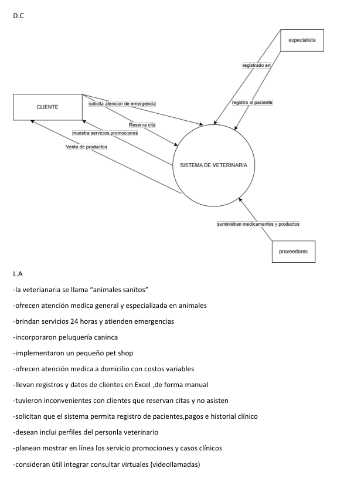

🐾 Veterinaria
Inicio
Marco Teórico
Análisis Estructurado
Análisis OO
Planificación
☰
Análisis Estructurado
Modelo Ambiental

Modelo de Comportamiento
Diagramas DFD
Diagrama DFD 1
Diagrama DFD 2
Diagrama DFD 3
Diagrama DFD 4
Explicaciones de cada diagrama